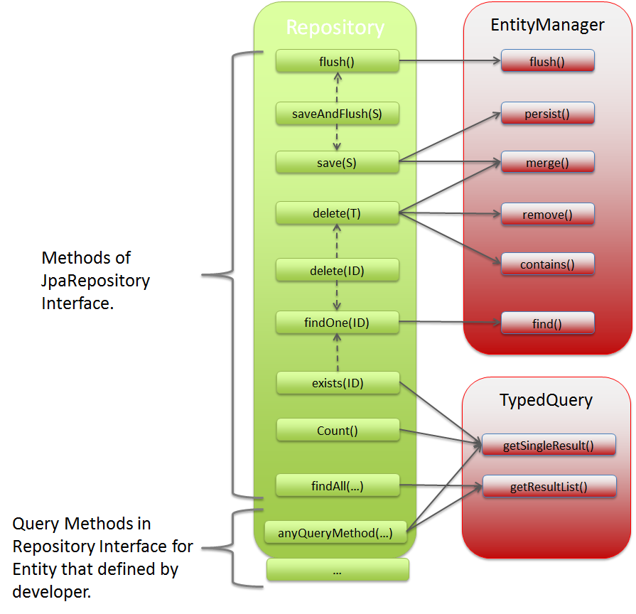
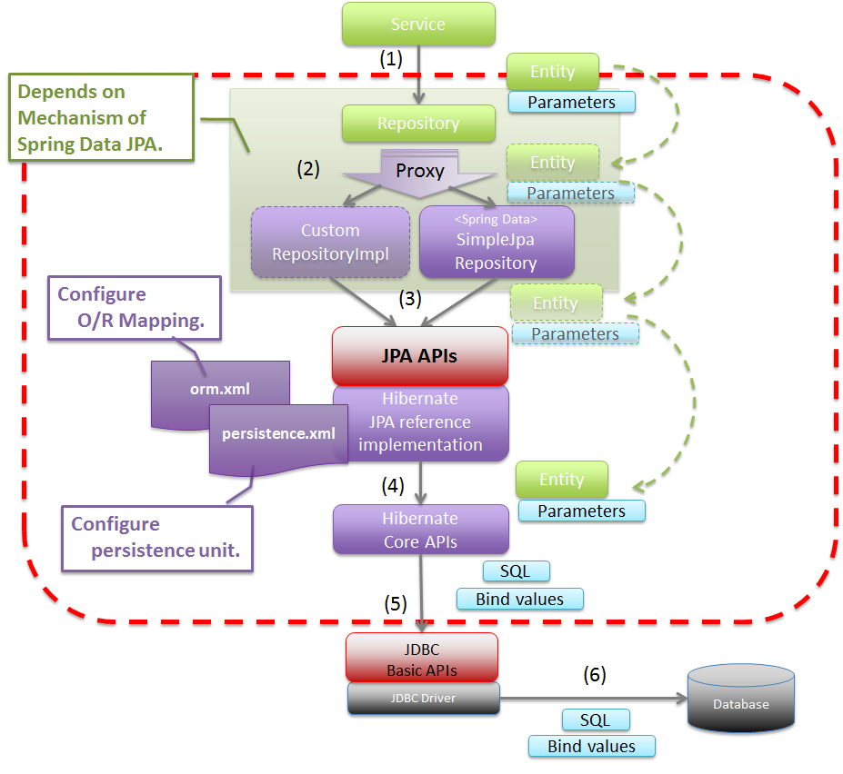

This page contains a list of Spring Data JPA tutorials and examples. The goal of the Spring Data JPA module is to significantly reduce the amount of boilerplate code required to implement data access layers for various persistence stores.
Important: All the Spring Data JPA Tutorials are upgraded to use Spring Boot 3 and Java 17.
The SimpleJpaRepository class provides the default implementation of a Repository
interface.
SimpleJpaRepository class internally uses JPA EntityManager to map its methods
with JPA EntityManager
interface methods.
It is better to know which JPA EntityManager method is being called by methods of the
Repository interface
(SimpleJpaRepository class) of Spring Data JPA.
The JPA methods called by the main methods of the Repository interface of Spring Data JPA are shown below:
Once you have completed reading all the articles above, let's understand the basic flow of accessing the database using Spring Data JPA, as shown below:
This page categorizes the Spring Data JPA tutorials and provides a comprehensive guide to various aspects of using Spring Data JPA, helping you efficiently implement data access layers in your Spring Boot applications.